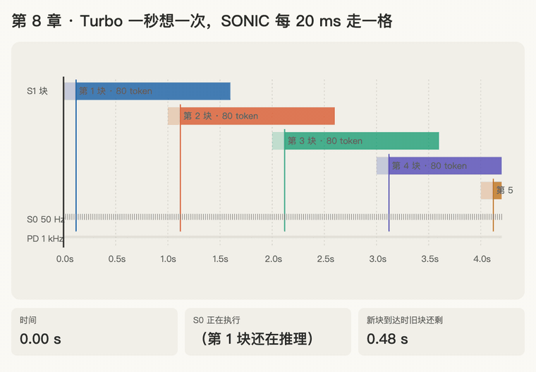

读懂 GR00T 2 · 讲义目录
11 章 · 10 个动画（GIF + 可交互页面）· 24 张复习卡片 · 覆盖 GR00T 2 白皮书（2026-11）正文 §1–5 与附录 A–K 的主要内容
这本书讲什么
从"WAM 和 VLA 差在哪"讲起，依次走过 GR00T 2 的架构、三阶段预训练、数据配方、跨本体迁移、RL 后训练、agent 协作、人形部署、真机评测方法、实时部署，最后是作者自己列的开放问题。
- 适合谁：读过
vla-deep-dive第 3 章（action chunking）和第 8 章（π0）；flow matching、Bradley-Terry、PPO 在用到的那一章现场补。 - 读完能做什么：能独立读懂白皮书附录，评估 WAM 路线在自己项目里的取舍，能复算白皮书里的 token 数、胜率、样本量。
- 怎么读：按章顺序读。每章先看讲解，再自己做练习，最后用复习卡片隔几天考自己。
讲解的特点
- 每章一个动画：第 1–10 章各配一个，GIF 嵌在讲义"动画演示"一节，同名
.html可单步、拖滑块，目录见 animations/README.md。 - 一次一小步：每个概念按"白话类比 → 公式（每个符号说清楚怎么读）→ 小数字亲手算一遍"讲。
- 对照原文：讲到原文的地方标
materials/text/gr00t2-whitepaper.txt的行号（如 L130–L131）；推算出来、原文没直接写的数都标了"推算"。 - 保留真实的学习过程：练习与作答记录里是学习时的原话、对错和点评。
- 术语不设门槛：缩写第一次出现就给英文全称并逐词解释，全书缩写见 缩写与术语表。
- 每章收尾有口诀：全部口诀汇总在本页末尾。
示例动画
 第 1 章 VLA 与 WAM 能算的 loss · 讲义 · ▶ 交互 |
 第 2 章 token 数与 joint / cached 去噪 · 讲义 · ▶ 交互 |
 第 6 章 CPS 探索与带记忆基线 · 讲义 · ▶ 交互 |
 第 8 章 人形三层频率 · 讲义 · ▶ 交互 |
 第 9 章 盲测 A/B 拟合 Elo · 讲义 · ▶ 交互 |
 第 10 章 延迟瀑布与 RTC 交接 · 讲义 · ▶ 交互 |
全部动画见 animations/README.md。
其他入口
- 架构总结：技术亮点、数值表、模型塔结构，一页看全
- 复习卡片 · 专题研究总览 · 学习计划
全流程总览
数据（第 4 章） 模型（第 1、2 章） 训练（第 3、6 章）
人类视频 40 万 h ┐ 视频 VAE ────────┐ Stage 1 只学视频
UMI 1 万 h ├─▶ 联合预训练 ─▶ 状态/动作 MLP ───┼─▶ 2B 单塔 DiT ─▶ Stage 2 视频+动作
遥操作 2.35 万 h ┘ 文本 cross-attn ─┘ （画未来+出动作） Stage 3 机器人加权
→ LoRA 少样本 / RL 后训练
用起来（第 5、7、8、10 章） 量起来（第 9 章）
X-Adapt 零遥操作学新任务 · agent 当 S2 · 人形 S1 盲测 A/B → Bradley-Terry Elo
· 实时部署（TensorRT / FP8 / RTC / 变速） · 校准仿真代理评测
↓
开放问题（第 11 章）
| 步 | 做什么 | 为什么 | 章 |
|---|---|---|---|
| 1 | 把 VLA 换成 WAM | 未来画面对没有机器人动作的数据也能算 loss | 1 |
| 2 | 视频、状态、动作进同一个 DiT | 动作能看着想象的未来生成 | 2 |
| 3 | 先学看、再学动、再学本体 | 先建视觉动力学先验 | 3 |
| 4 | 三类数据分工 | 见识 / 任务 / 身体 | 4 |
| 5 | 演示定任务、玩耍定身体 | 不遥操作也能学新任务 | 5 |
| 6 | CPS + 带记忆 GRPO + 自模仿 | 接触任务从 40–76% 到 88–98% | 6 |
| 7 | agent 管工序、画点指路 | 长程可靠性 | 7 |
| 8 | Turbo + SONIC 三层栈 | 人形 50 Hz 平衡 | 8 |
| 9 | 盲测 A/B + Elo + 校准仿真 | 可累积、可置信的进步 | 9 |
| 10 | 编译、量化、RTC、变速 | 实时、平滑、比人快 | 10 |
| 11 | 作者的开放问题 | 下一步往哪走 | 11 |
目录
| 章 | 主题 | 一句话精要 | 动画 | 卡片 | 状态 |
|---|---|---|---|---|---|
| 1 | 什么是 WAM | WAM 比 VLA 多预测未来画面，这一项让人类视频也能算 loss | ▶ | G01–G03 | 🟡 三步已讲；练习 1 ✓，练习 2、3 待作答 |
| 2 | 架构 | 280 token / 路 / 帧，视频和动作同序列一起去噪，Turbo 只换 VAE | ▶ | G04–G06 | 🟡 正文已写，练习待作答 |
| 3 | 三阶段预训练与少样本适配 | 先看后动再认身；rank-32 LoRA 30 分钟 | ▶ | G07–G08 | 🟡 正文已写，练习待作答 |
| 4 | 数据配方 | 录像管见识、UMI 管任务、遥操作管身体；scaling 未饱和 | ▶ | G09–G10 | 🟡 正文已写，练习待作答 |
| 5 | X-Adapt | 演示定任务、玩耍定身体；几何要对齐、外观交给模型 | ▶ | G11–G12 | 🟡 正文已写，练习待作答 |
| 6 | RL 后训练 | CPS 加噪、带记忆基线、自模仿最好、世界模型里也能练 | ▶ | G13–G14 | 🟡 正文已写，练习待作答 |
| 7 | Agentic | agent 管工序和恢复，图上画点指路；可靠性三层叠 | ▶ | G15–G16 | 🟡 正文已写，练习待作答 |
| 8 | 人形全身 | Turbo 1 Hz 出 80 个 token，SONIC 50 Hz 保平衡；WAM 更会吃仿真 | ▶ | G17–G18 | 🟡 正文已写，练习待作答 |
| 9 | 评测 | 同场盲测、Bradley-Terry Elo、按任务 bootstrap、仿真相关 0.93 | ▶ | G19–G21 | 🟡 正文已写，练习待作答 |
| 10 | 部署 | 加速 2.9–7.2×、noisy-prefix RTC、按阶段变速快 15–26% | ▶ | G22–G23 | 🟡 正文已写，练习待作答 |
| 11 | 开放问题 | 预测什么、数据汇率、99% 可靠性怎么测 | 无 | G24 | 🟡 正文已写，练习待作答 |
口诀汇总
第 1 章 什么是 WAM
多画一帧未来图，人类录像全能读；
世界怎变大家学，身体怎动各一头；
人看越多机越强，算力大头在画图。
第 2 章 架构
缩印剪票二百八，粗笔一换剩七十；
视频动作同一列，语言旁听交叉看；
两步画面四步手，缓存键值省大头。
第 3 章 三阶段预训练
先看后动再认身，一阶只把画面跟；
有标才算动作损，机器加权落自身；
贴张低秩小便签，难段多练半小时。
第 4 章 数据配方
录像管见识，同款管任务，后厨管身体；
手点二十一，字幕分两级；
只改看多少，十四点还在涨。
第 5 章 X-Adapt
演示定做啥，玩耍定身体，预训练来牵线；
几何必须手对齐，外观交给模型补；
力当动作软关节，捏得稳也不怕偏。
第 6 章 RL 后训练
只给动作加点噪，方差不变好算概；
基线掺进老成绩，全对全错也有梯；
探出成功再模仿，残差小修不动底，梦里练完真机测。
第 7 章 Agentic
工长管工序，师傅管手艺；
抓点画圆放点叉，洋红左手青色右；
预训练给广度，纠错练精度，agent 兜底恢复。
第 8 章 人形全身
一秒一想一点六，八十令牌二十毫；
平衡交给 SONIC 管，PD 千赫跟到底；
舞步不变换舞台，WAM 吃仿更长进。
第 9 章 评测
同场同人几分钟，漂移相消才算公；
强度拟合换 Elo，四百为底十为幂；
抽样要抽任务头，仿真零点九三准，九九可靠测不够。
第 10 章 部署
复用编译图回放，八位少步再预取；
交棒前缀加点噪，接得上又不照抄；
直道加速弯道慢，机器快过示范人。
第 11 章 开放问题
不必全靠机器录，可靠要靠层层叠，测不准就别前进；
预测什么记多久，力觉触觉怎么接；
汇率未知难分钱，九九可靠测不够，稀缺换能是总题。